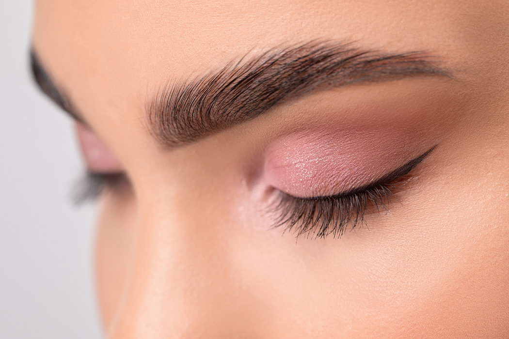

<nav class="navbar custom-dark-gradient-250">
  <div class="container-fluid">
    <a class="navbar-brand color-beige" href="#">K Oliveria Design</a>
  </div>
</nav>

<div class="container-fluid custom-dark-gradient-250 p-3" role="main">
  <div id="carouselExample" class="carousel slide" data-bs-ride="carousel">
    <div class="carousel-inner custom-dark-gradient-250" style="min-height: 50vh; max-height: 90vh">
      <div class="carousel-item">
        
      </div>
      <div class="carousel-item active">
        
      </div>
      <div class="carousel-item">
        
      </div>
    </div>
    <button class="carousel-control-prev" type="button" data-bs-target="#carouselExample" data-bs-slide="prev">
      <span class="carousel-control-prev-icon" aria-hidden="true"></span>
      <span class="visually-hidden">Previous</span>
    </button>
    <button class="carousel-control-next" type="button" data-bs-target="#carouselExample" data-bs-slide="next">
      <span class="carousel-control-next-icon" aria-hidden="true"></span>
      <span class="visually-hidden">Next</span>
    </button>
  </div>
</div>
<router-outlet></router-outlet>
